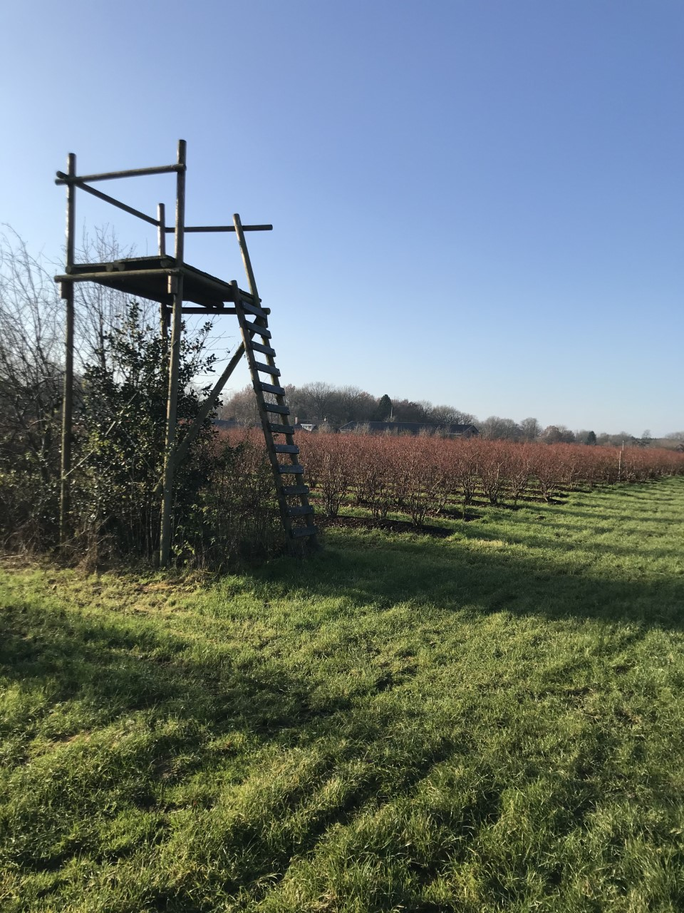
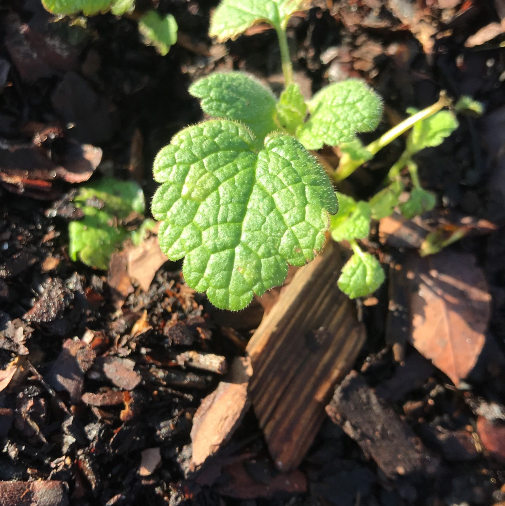
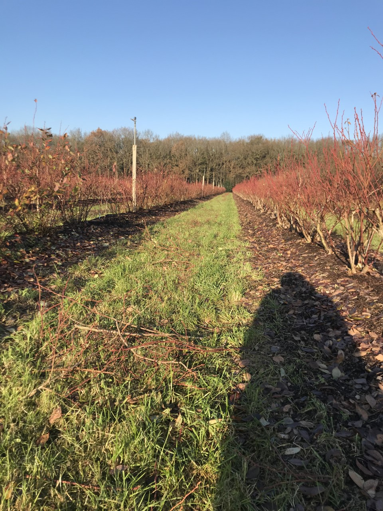

Project MSI bij Blueberry Innovators
Op 18 September kwamen meerdere bedrijven een pitch geven over wat voor opdracht zij hadden open staan voor de studenten en ook wat voor bedrijf zij zijn. Na de pitch had iedere groep de tijd om vragen te stellen aan het bedrijf en achter te komen of het bedrijf past bij de vaardigheden van de student. Onze groep heeft uiteindelijk besloten dat Blueberry Innovaters ons het meest aansprak. De opdracht die gegeven werd had te maken met onkruid herkenning voor de blauwe bessen telers. Door middel van machine learning willen
zij dat onkruid automatisch herkend worden door machine's. Onze inbreng was het verdiepen en verbreden van deze opdracht.Na de eerste vergadering hadden we besloten om te beginnen met het PVA maken en die is hieronder te lezen.
1.0 Inleiding en doelstelling
Inleiding
Tijdens de presentatie van Blueberry Innovators, een internationaal R&D-bedrijf van blauwe bessentelers uit Nederland, Duitsland en België, zijn de resultaten van het project dat nog in ontwikkeling is weergegeven. Blueberry Innovators en de HAN hebben al vaker met elkaar samengewerkt. Het project heeft betrekking op Smart Farming, waar al resultaten in behaald zijn door vorige studenten. Wij hebben in een overleg met Pim Deuling, Business Developer vanuit Blueberry Innovators, inspiratie opgedaan om tot ideeën te komen om meerwaarde te creëren voor Blueberry Innovators in dit project. Verder is er een gesprek geweest met de vorige Smart Industry studenten om inzicht te krijgen in de tot nu toe vergaande vorderingen.
In dit Plan van Aanpak zullen de volgende zaken behandeld worden:
Inleiding en doelstelling
Scope en afbakening
Hoofd- en deelvragen
Planning
Kwaliteit beheer
Organisatie
Bronnen
Doelstelling
Het doel van deze opdracht is het verbreden en verdiepen van het herkennen van onkruid tussen blauwe bessenstruiken. Hiermee wordt bedoeld dat er meerdere soorten onkruiden moeten worden ingevoerd in de applicatie en de bestaande soorten onkruiden beter moeten worden herkend door een hoger herkenningspercentage dan nu het geval is.
Door de lage ICT-kennis op dit gebied is de kans groot dat wij dit niet volledig kunnen realiseren en daarom willen wij op een andere manier meerwaarde creëren door het aanleveren van data (foto’s) gemakkelijker te maken voor de telers door hiervoor een omgeving te creëren waar dat gemakkelijker wordt.
 2.0 Scope en afbakening
2.0 Scope en afbakening
Scope
Bij de afbakening worden de projectgrenzen beschreven. Dit moeten het project duidelijker maken.
Wat er wel wordt gedaan:
Er wordt van 14 oktober 2019 t/m 17 januari 2020 aan het project gewerkt.
De op te leveren producten zoals ze staan beschreven in het hoofdstuk ‘’5.0 Eindproducten’’.
Wat er niet wordt gedaan:
Het maken van hardware (robot).
Het implementeren van een applicatie in een productie omgeving.
Afbakening
Alle betrokken partijen moeten voldoen aan een aantal randvoorwaarden. Deze paragraaf bevatten deze randvoorwaarden, namelijk:
De opdrachtgevers zijn tijdens kantooruren op werkdagen bereikbaar voor vragen en op- en/of aanmerkingen.
De coach houdt zich beschikbaar voor ondersteuning tijdens de ontwikkeling van het project.
Ondersteuning van de opdrachtgever voor de ontwikkeling van het project
3.0 Hoofd- en deelvragen
Hoofdvraag
Om het doel te behalen, wordt het doel getransleerd in een vraag. De hoofdvraag voor het onderzoek ziet er dan als volgt uit:
Op welke manier kan de al gemaakte tool TensowFlow, worden uitgebreid tot meer hekenbare onkruiden en de zekerheid van detectie verhoogt worden naar 95% voor 16 Januari 2020?
Deelvragen
Welke onkruiden zijn nog meer van belang om op te nemen in applicatie?
Is de applicatie ook om te draaien? i.p.v. onkruid herkennen worden de blauwe bessen herkent
Hoe kan er meer data voor de applicatie verkregen worden via het internet?
Hoe kan er voor een hogere zekerheid van detectie van onkruid worden gezorgd?
Hoe kunnen de telers hun data voor de applicatie verkrijgen?
4.0 Methode van onderzoek
De Onderzoeksmethodes die gebruikt gaan worden in dit onderzoek zijn deskresearch en diepte-interviews. Deskresearch wordt voornamelijk toegepast bij de uitwerking van de deelvragen. Het deskresearch zal bestaan uit literatuur- en bronnenonderzoek. Om de werkwijze en eisen van de boeren in beeld te krijgen zal er een diepte interview worden afgenomen.
Het project zal uit drie fases bestaan
Fase 1 Ontwerpfase
In deze fase wordt het plan van aanpak waarin de doelstellingen en onderzoeksvragen staan opgesteld.
Fase 2 Onderzoekfase
In deze fase zal de projectgroep onderzoek gaan doen om de hoofdvraag en deelvragen te beantwoorden.
Fase 3 ontwerpfase
Met de resultaten van het onderzoek wordt een eindproduct ontwikkeld om de doelstelling te realiseren.
5.0 Planning
Het project loop van 17 oktober 2019 tot en met 17 januari 2020.
6.0 Kwaliteit beheer
Overleg
Om de kwaliteit te waarborgen van het project zal de projectgroep iedere week verslag leveren aan Pim Deuling. Dit zal gebeuren doormiddel van een telefoongesprek en met een notulen via de email.
In het overleg zal Iedere week zal er waarbij de projectmanager en de twee projectleden aanwezig zullen zijn. De projectmanager zal de huidige stand van zaken presenteren en de doelstellingen van de afgelopen week bespreken. Daarnaast worden er gezamenlijk nieuwe doelen gesteld voor de week daarop. Wanneer nodig zal er buiten de besprekingen via E-mail contact plaatsvinden.
Stakeholders
Bij het project zijn een aantal stakeholders betrokken. Hieronder zijn de rollen en verantwoordelijkheden van de stakeholders weergegeven.
Personen
Rol
Verantwoordelijkheid
Roen Pulles, Breyten Kouwenberg, Thijs van Leerdam
Projectteam
Uitvoeren van het project
Pim Deuling
Opdrachtgever
Ondersteuning en goedkeuring
Hubert Bijsterveld
Begeleider
Ondersteuning
Eindproducten
Het op te leveren product voor dit project is een verbreding en een verdieping van het de applicatie die onkruid kan herkennen dat is opgeleverd door de vorige projectgroep van dit project. Hierin zal er vooral gekeken worden naar het uitbreiden van de hekenbare onkruiden en een manier om zo veel mogelijk data te kunnen leveren voor de applicatie zodat de herkende onkruiden met een hogere graad van succes.
7.0 Organisatie
Dit project is als volgt georganiseerd. Het Projectteam bestaat uit Roen Pulles, Breyten Kouwenberg en Thijs van Leerdam. Vanuit Innoveins is de opdracht gegeven om de onkruidbestrijding te verbeteren, het aanspreekpunt vanuit Blueberry Innovators is Pim Deuling. Deze oplossing is voor de blauwe bessentelers van Blueberry Innovators, de teler waar de projectgroep contact mee heeft is de firma Noorderbos. De projectleider vanuit de HAN gezien is Hubert Bijsterveld.
Documentatie
De archivering van de gemaakte stukken zullen opgeslagen worden op een gedeelde Dropbox. Alle stakeholders zullen belangrijke stukken ontvangen via e-mail.
Werkdagen
De projectleden zullen elke maandag, woensdag en vrijdag van de week werken aan het project. Op vrijdag zullen alle stakeholders worden ingelicht over de voorgang van het project.
Op bezoek bij blauwe bessen teler Noorderbos
Voor het verbreden van de machine learning tool hadden wij meer data nodig. We zijn op 4 December naar de firma Noorderbos gegaan om in gesprek gaan met de blauwe bessen teler om te vragen hoe zij naar het project kijken en om foto's te maken van de onkruiden die zich planten bij de blauwe bessen.
Het was een leerzame dag en hebben vele foto's kunnen maken.



Resultaten
Helaas is het doel wat wij voor ogen hadden niet behaald. Wij wilden door middel van de al bestaande machine learning tool de data verbreden en verdiepen. We hebben hier veel tijd aan besteed maar uiteindelijk was Tensorflow te ingewikkeld voor ons. Helaas ontbrak bij ons alle drie de ICT kennis en liepen we bij dat onderdeel ook steeds vast. We hadden van te voren al besproken met Pim Deuling dat het ICT gedeelte niet voor ons bijpassend is maar hadden alle vier het idee dat de basis wel zal lukken.
Dit was achteraf toch te moeilijk voor ons en liepen steeds maar vast en hebben daardoor ook dus veel tijd verloren. We hebben wel veel data kunnen verkrijgen en hier kan de volgende groep wel makkelijk en snel mee verder werken. Het vereiste aan de volgende groep moet alleen wel echt zijn dat iemand ICT achtergrond heeft anders loopt het project weer vast.